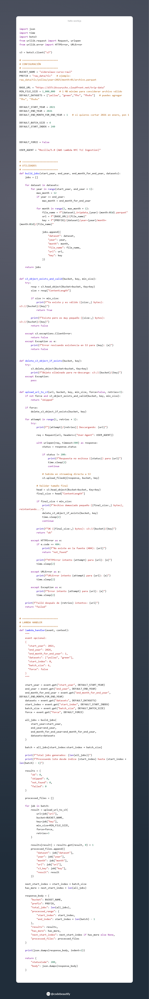
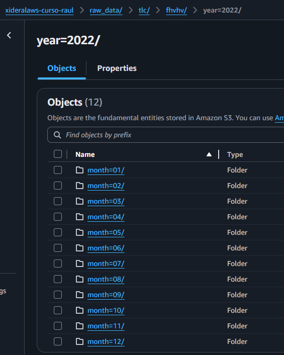
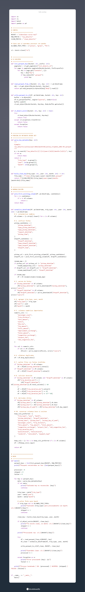
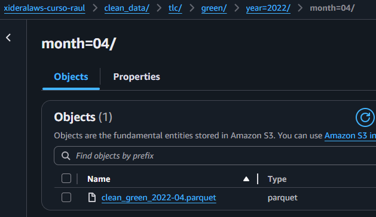
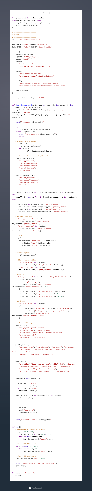
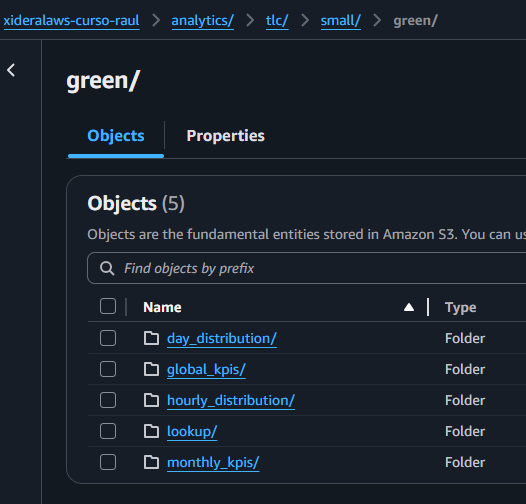
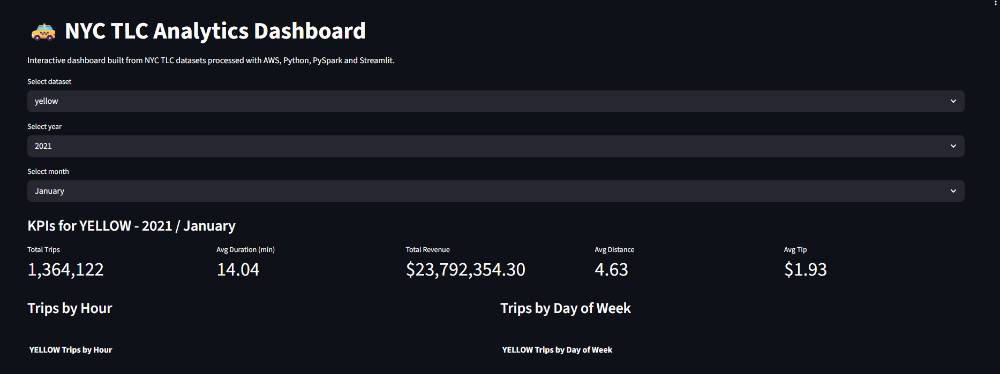
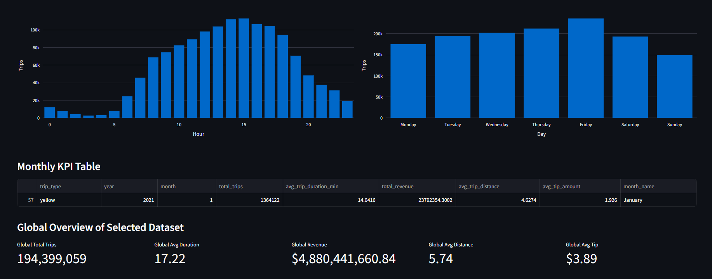

Proyecto Final · Data Academy Xideral
Pipeline de datos escalable con Lambda, PySpark, Hadoop y Streamlit
Este proyecto integra un flujo de datos completo de extraccion, limpieza, transformacion y visualizacion. Utiliza una Lambda para la extraccion inicial de datos, almacenamiento en S3 y un conjunto de scripts de Python segmentados por tipo de dataset (pequeno y grande), incorporando PySpark sobre Hadoop para procesamiento distribuido. Los resultados se publican en una app de analitica en Streamlit.
Python
Pandas
PySpark
AWS Lambda
Amazon S3
Streamlit
Hadoop
Docker
1 Lambda
Extraccion de datos crudos y carga inicial en S3
Scripts segmentados
Limpieza y transformacion con Python, Pandas y PySpark segun volumen de datos
1 Dashboard
Visualizacion de KPIs en Streamlit desplegada en red interna
Descripcion general
Que resuelve el proyecto
El objetivo principal es transformar datos crudos en informacion util para toma de decisiones. El sistema consulta archivos de entrada, aplica reglas de limpieza y deja artefactos listos para consumo en una aplicacion Streamlit. El flujo aprovecha AWS para separar el procesamiento pesado de la capa de presentacion y mantener una experiencia de uso ligera.
Arquitectura
Capa de datos, computo y visualizacion
La arquitectura sigue un patron modular: Lambda para extraccion inicial, S3 como almacenamiento central, scripts Python/Pandas/PySpark para limpieza y transformacion por tipo de dataset, y Streamlit para analitica interactiva. Esto facilita mantenimiento, escalabilidad y trazabilidad del pipeline.
Fuente de datos (NYC TLC) -> Lambda (extraccion) -> S3 raw -> Scripts Python/Pandas/PySpark (limpieza y transformacion) -> S3 curated/golden -> Streamlit
Flujo de datos
Operacion end-to-end del pipeline
Extracción de datos
Codigo de extracción y evidencia
La etapa de extracción se encarga de obtener los datos crudos desde la fuente original (NYC TLC) y almacenarlos en S3. A continuación se muestran capturas de código y resultados que evidencian esta parte del proceso


Limpieza de datos
Codigo de limpieza y evidencia
La etapa de limpieza aplica reglas para dejar los datos consistentes antes de agregarlos. Aqui se muestran capturas de codigo y ejecucion utilizadas durante el desarrollo del pipeline.


Transformación de datos
Codigo de transformación y evidencia
La etapa de transformación aplica reglas para dejar los datos preparados en base a KPIs antes de agregarlos. Aqui se muestran capturas de codigo y ejecucion utilizadas durante el desarrollo del pipeline.


KPIs del dashboard
Indicadores considerados para el analisis
El dashboard se construyo con indicadores operativos y financieros para evaluar volumen, rentabilidad y eficiencia del servicio de taxis.
Tarifa media por viaje
Promedio del monto pagado por viaje en el periodo filtrado.
Ingresos totales
Suma total de ingresos generados por los viajes seleccionados.
Numero de viajes
Cantidad de registros de viajes procesados para la flota, anio y mes elegidos.
Total de pasajeros
Acumulado de pasajeros transportados en el periodo analizado.
Ingreso por milla
Relacion entre ingreso total y distancia recorrida para medir eficiencia del servicio.
Distribucion por metodo de pago
Participacion porcentual por tipo de pago para entender patrones de cobro.
Dashboard Exitoso
Resultados generados en base a KPIs


Dashboard
Proyecto final en accion
La app de Streamlit consume resultados del pipeline y permite explorar metricas de forma interactiva. Accede aqui al despliegue actual del proyecto final:
Patrones y estrategias
Decisiones de diseno aplicadas
Carga lazy / bajo demanda
S3 funciona como cache de datos procesados. El pipeline evita reprocesar periodos ya calculados y solo ejecuta tareas cuando realmente se requieren nuevos artefactos.
Invocacion asincronica
Las ejecuciones desacopladas permiten continuar con la experiencia de usuario mientras se completa el procesamiento en background.
Separacion de capas
Datos en S3, computo en Lambda y presentacion en Streamlit. Cada capa puede evolucionar de forma independiente.
Filtrado en cliente
El dashboard aplica filtros sobre estructuras en memoria para reducir consultas repetitivas y mejorar la latencia percibida.
Variables de entorno
La configuracion sensible (credenciales, bucket, rutas) se gestiona fuera del codigo para mantener seguridad y facilitar despliegues.
Contenedorizacion reproducible
El entorno de ejecucion se define con Docker para asegurar consistencia entre desarrollo y despliegue del dashboard final.